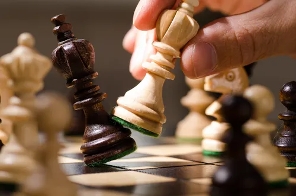
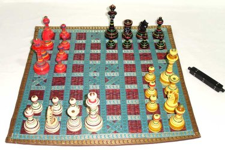

História do Xadrez
O xadrez é muito mais do que um simples jogo de tabuleiro; ele é um teste de inteligência, uma metáfora para a guerra e uma obra de arte estratégica que sobreviveu a impérios, revoluções e ao teste do tempo. Mas você sabe onde toda essa jornada começou?
Para entender como o xadrez se tornou o fenômeno global que é hoje, precisamos viajar mais de 1500 anos no tempo.

As Origens: O Berço Indiano e o Chaturanga

A maioria dos historiadores concorda que o xadrez nasceu na Índia, por volta do século VI d.C. Seu ancestral mais antigo conhecido chama-se Chaturanga.
O Chaturanga simulava as 4 divisões do exército indiano.
O termo Chaturanga se traduz como "quatro divisões", representando as forças militares da época: Infantaria (que viriam a ser os peões), Cavalaria (os cavalos), Elefantes (que mais tarde se transformaram nos bispos) e Carros de Guerra (as futuras torres).
O jogo era uma simulação de batalha e logo chamou a atenção da vizinha Pérsia (atual Irã), onde ganhou o nome de Shatranj. Foi ali que surgiu a famosa expressão "Shah Mat" (o Rei está morto), que deu origem à palavra Xeque-Mate.
A Chegada à Europa e a "Revolução da Rainha"

Com a expansão islâmica, o jogo cruzou o Norte da África e entrou na Europa através da Espanha e da Itália por volta do século X. Na Idade Média, o xadrez era o passatempo favorito da nobreza e da corte.
Na Europa Medieval, o Xadrez era visto como um jogo de prestígio e intelecto.
No entanto, o jogo original era muito mais lento do que o atual. Tudo mudou no final do século XV, quando as regras foram reformuladas para acelerar as partidas:
A Revolução do Tabuleiro: A peça que antes era o Vizir (um conselheiro fraco que andava apenas uma casa por vez) foi substituída pela Rainha (ou Dama). Ela recebeu o poder de se mover em qualquer direção por quantas casas quisesse, tornando-se a peça mais poderosa do jogo. Essa mudança foi uma provável homenagem a rainhas fortes da época, como Isabel de Castela.
Nessa mesma época, o Bispo também ganhou movimentos mais longos, e o xadrez tomou a forma moderna que conhecemos hoje.
A Era Romântica e os Primeiros Campeões
No século XIX, o xadrez explodiu em popularidade. Surgiram os primeiros clubes e os cafés de Paris e Londres tornaram-se palcos de duelos lendários. Esse período ficou conhecido como a Era Romântica do Xadrez. Os jogadores não se importavam tanto com a defesa; o objetivo era vencer com ataques brilhantes, sacrifícios de peças ousados e muita criatividade.
Em 1886, o austríaco Wilhelm Steinitz derrotou Johannes Zukertort e consagrou-se o primeiro Campeão Mundial oficial de xadrez. Steinitz mudou o jogo para sempre ao introduzir uma abordagem mais científica e posicional, provando que a estratégia de longo prazo superava os ataques impulsivos.
A Guerra Fria e a Era dos Computadores
Durante o século XX, o xadrez virou uma ferramenta geopolítica. A União Soviética dominou o cenário mundial por décadas, usando o esporte para demonstrar superioridade intelectual. Essa hegemonia foi quebrada em 1972, no chamado "Match do Século", quando o americano Bobby Fischer derrotou o soviético Boris Spassky em plena Guerra Fria.
Anos mais tarde, o xadrez encontrou seu próximo grande desafio: a tecnologia
- 1997 - O supercomputador Deep Blue (IBM) derrota o campeão mundial Garry Kasparov. Prova que as máquinas alcançaram o nível humano no cálculo tático.
- 2017 - A inteligência artificial AlphaZero (Google) aprende o jogo sozinha em poucas horas. Revoluciona a forma como humanos entendem a estratégia e a criatividade no tabuleiro.
O Xadrez Hoje: O Boom Digital
Hoje, o xadrez vive uma nova era de ouro. Impulsionado por plataformas online (como o Chess.com), transmissões ao vivo via Twitch/YouTube, o sucesso global de séries de TV (como O Gambito da Rainha) e os torneios de e-sports, o jogo atrai milhões de novos praticantes todos os dias.
A essência, porém, continua exatamente a mesma daquela que fascinava os reis na Índia antiga: um universo infinito de possibilidades escondido dentro de 64 casas.
As peças
Para dominar o xadrez, é preciso conhecer a fundo os soldados desse exército de madeira (ou plástico). Cada peça tem sua própria personalidade, valor estratégico e forma de se mover pelo tabuleiro.
Abaixo, desvendamos o papel de cada uma das 6 peças do jogo, do humilde peão ao soberano rei.
1. O Peão: A Alma do Xadrez
- Quantidade: 8
- Valor: 1 ponto
Os peões são a infantaria do jogo. Eles tem a cabeça reluzente. Avançam devagar, sempre uma casa para a frente, mas têm uma peculiaridade: são as únicas peças que capturam na diagonal (andando uma casa para o lado e para a frente). No seu primeiro movimento do jogo, cada peão tem o privilégio de avançar duas casas de uma vez.
O Superpoder do Peão: Embora sejam os mais fracos, os peões guardam o maior segredo do jogo: a Promoção. Se um peão conseguir cruzar todo o tabuleiro e chegar à última linha do adversário, ele pode se transformar em qualquer outra peça (geralmente uma Rainha). Como disse o mestre François-André Philidor: "Os peões são a alma do xadrez".
2. O Cavalo: O Mestre dos Saltos
- Quantidade: 2
- Valor: 3 pontos
O cavalo é a peça mais imprevisível do tabuleiro. Ele se move em um formato de "L" (duas casas em uma direção e depois uma casa para o lado).
Sua grande vantagem tática é a capacidade de pular por cima de qualquer peça, seja aliada ou inimiga. Isso o torna uma arma mortal em posições "fechadas", onde o tabuleiro está congestionado. Os cavalos adoram se posicionar no centro do tabuleiro, de onde conseguem atacar até 8 casas diferentes ao mesmo tempo.
3. O Bispo: O Atirador de Longa Distância
- Quantidade: 2
- Valor: 3 pontos
O bispo representa o clero ou os conselheiros do rei. Eles se movem em linhas diagonais por quantas casas quiserem, desde que o caminho esteja livre.
Cada jogador começa com um "Bispo das casas claras" e um "Bispo das casas escuras". Eles nunca mudam a cor da casa onde pisam. Enquanto os cavalos são ótimos para combates de curto alcance, os bispos brilham em posições "abertas", conseguindo cruzar o tabuleiro em um único movimento para desferir um ataque surpresa.
4. A Torre: A Fortaleza Pesada
- Quantidade: 2
- Valor: 5 pontos
As torres simbolizam os castelos, carros de guerra ou as fortificações do exército. Elas se movem em linhas retas, seja horizontal ou verticalmente, por quantas casas quiserem.
A torre é considerada uma "peça maior" devido ao seu alto poder de destruição. Elas adoram controlar colunas abertas e, junto com o Rei, podem realizar uma jogada especial de defesa chamada Roque, que protege o monarca e coloca a torre em uma posição ativa de ataque.
5. A Dama (ou Rainha): A Força Suprema
- Quantidade: 1
- Valor: 9 pontos
A Dama é, sem sombra de dúvidas, a peça mais poderosa e temida do xadrez. Ela combina o poder da Torre e do Bispo em uma única peça: pode se mover em linhas retas e diagonais por quantas casas quiser.
Perder a Dama no início do jogo sem uma boa compensação tática é quase sempre sinônimo de derrota. No entanto, os mestres alertam: não a traga para o jogo cedo demais, ou ela se tornará alvo de ataques dos peões e peças menores do adversário.
6. O Rei: O Coração do Jogo
- Quantidade: 1
- Valor: O jogo
O Rei é a peça mais importante do tabuleiro, embora não seja a mais forte. Ele se move para qualquer casa adjacente (apenas uma casa por vez, em qualquer direção).
O objetivo do xadrez é encurralar o Rei adversário de forma que ele não possa escapar, o famoso Xeque-Mate. O Rei nunca pode ser capturado e sumir do tabuleiro; o jogo termina no exato momento em que o mate é desferido. Curiosamente, na fase final da partida (quando restam poucas peças), o Rei deixa de ser um monarca indefeso e se transforma em uma peça de ataque ativa e fundamental para garantir a vitória.
Jogadas Especiais
No xadrez, a maioria das peças segue regras rígidas de movimento. No entanto, existem três exceções ocultas nas regras oficiais que podem mudar o rumo de uma partida. Elas são chamadas de jogadas especiais.
Se você quer surpreender seus adversários e entender o jogo de verdade, precisa dominar o Roque, a Promoção e o misterioso En Passant. Descubra como cada um funciona abaixo!
1. O Roque: O Escudo do Rei e a Ativação da Torre
O Roque é a única jogada no xadrez em que você pode mover duas peças próprias no mesmo lance: o Rei e a Torre. O objetivo é duplo: colocar o seu Rei em segurança em um dos cantos do tabuleiro e, ao mesmo tempo, trazer a Torre para o centro, pronta para o ataque.
Como funciona: O Rei anda duas casas em direção à Torre, e a Torre "pula" o Rei, ficando colada ao lado dele.
Existem dois tipos de Roque:
- Roque Pequeno (ou ala do Rei): Feito com a Torre que está mais perto do Rei.
- Roque Grande (ou ala da Dama): Feito com a Torre que está mais distante.
As Regras de Ouro do Roque: Você só pode fazer o roque se:
- Nem o Rei e nem a Torre escolhida tiverem se movido ainda na partida.
- O caminho entre eles estiver totalmente livre (sem nenhuma peça no meio).
- O Rei não estiver em xeque, e não for passar por nenhuma casa atacada por uma peça adversária.
2. A Promoção: O Sonho de Consumo do Peão
O peão é a peça mais fraca do jogo, mas ele carrega uma ambição gigante. Se um humilde peão conseguir sobreviver à batalha e cruzar todo o tabuleiro, alcançando a última fileira do adversário (a 8ª linha para as brancas ou a 1ª linha para as pretas), ele é promovido.
No exato momento em que pisa nessa última casa, o peão é removido do tabuleiro e transformado em uma peça mais poderosa. O jogador pode escolher transformá-lo em:
- Uma Dama (Rainha) — a escolha em 99% dos casos.
- Uma Torre
- Um Bispo
- Um Cavalo
Nota importante: Você não precisa escolher uma peça que já tenha sido capturada. Se você quiser, pode ter duas, três ou até mais Damas ao mesmo tempo no tabuleiro!
3. En Passant: O Ataque Fantasma
De todas as regras do xadrez, o En Passant (uma expressão em francês que significa "ao passar") é a que mais confunde os iniciantes — e até alguns jogadores intermediários. É uma captura especial que só acontece entre peões.
A jogada foi criada séculos atrás, quando o peão ganhou o direito de andar duas casas em seu primeiro movimento. Para evitar que um peão "fugisse" de um confronto pulando duas casas, surgiu o En Passant.
Como funciona na prática:
Se você tem um peão avançado (na 5ª fileira para as brancas, ou na 4ª para as pretas) e o seu adversário move o peão vizinho duas casas para a frente, parando lado a lado com o seu... você pode capturá-lo!
Você move o seu peão na diagonal para a casa que o adversário "pulou", e o peão inimigo é retirado do tabuleiro, como se ele tivesse andado apenas uma casa.
Atenção para o relógio: O En Passant é um direito temporário. Você só pode fazer essa captura imediatamente no lance seguinte ao avanço do peão adversário. Se você fizer outra jogada, perde o direito de fazer o En Passant pelo resto da partida.